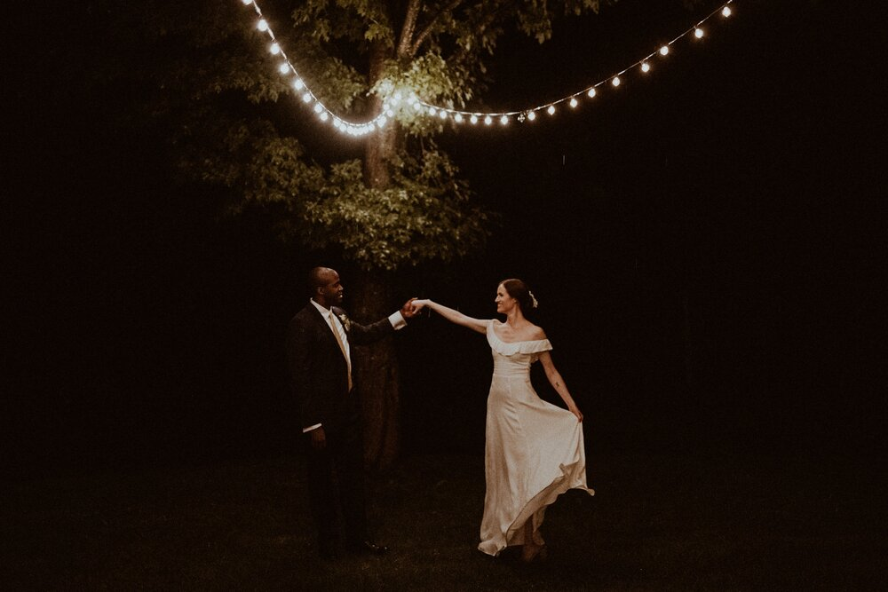
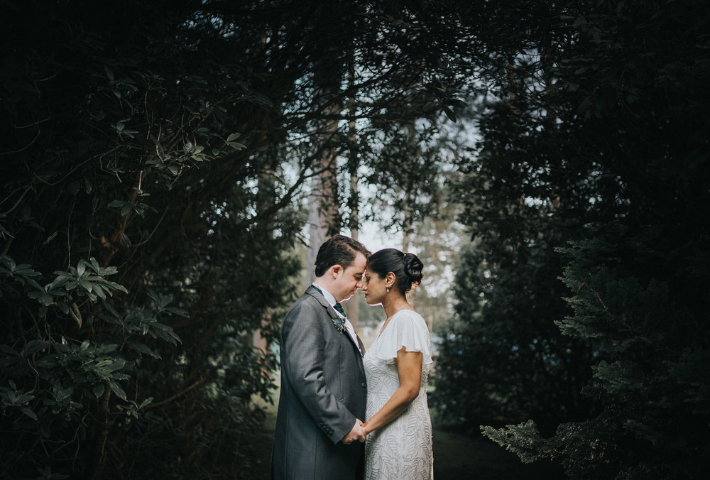
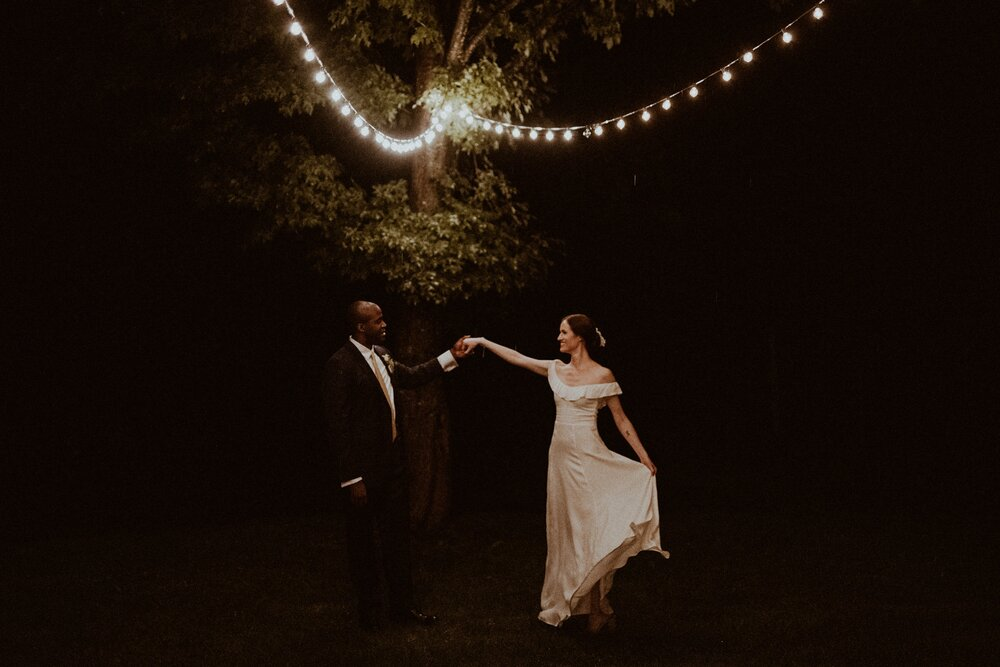
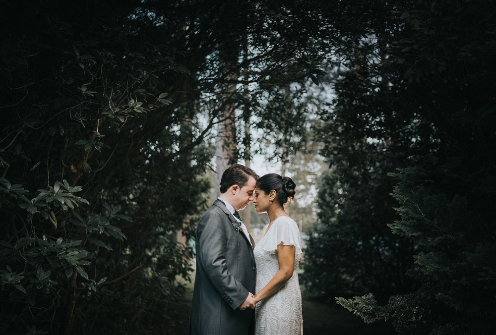

Welcome To MyPhotography.lk
 



MyPhotography.lk is a professional wedding photography studio in Kandy, Sri Lanka. MyPhotography.lk founder and photographer Anusha Perera has 12 years' experience in wedding photography. We offer wedding photography, wedding videography, commercial photo shoots, personal portfolio shoots, and more. If you love our work and feel you would like to meet and discuss your wedding, or if you have any enquiries about our services, please contact us via the contact page and we will reach out to you shortly.
Over the past 12 years, we have built a reputation for being the first choice for prestigious clients, who require services of the nature in Sri Lanka. Our clients include His Excellency the President of Sri Lanka, former Presidents and Prime Ministers, Members of Parliament, High Officials in the Government, well-known businessmen, famous sportsmen, and local celebrities.
We have a team of highly proficient photographers and videographers, many of whom have been with us from the beginning. Our five-story office and studio complex is located in a highly commercial area, covering 5000 sq.ft.